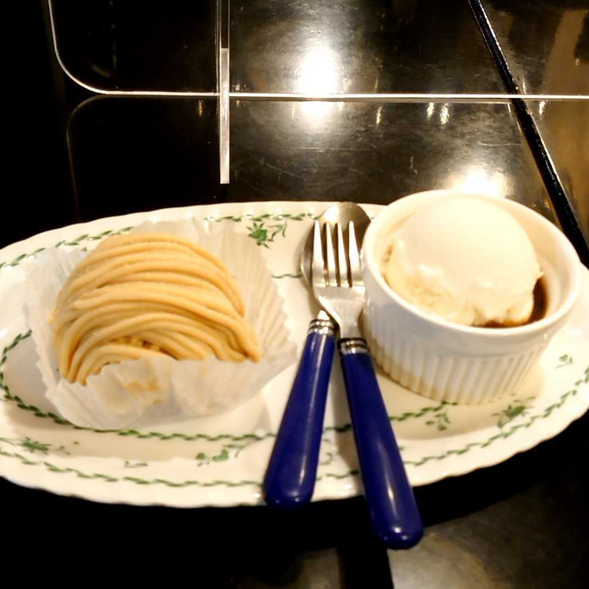
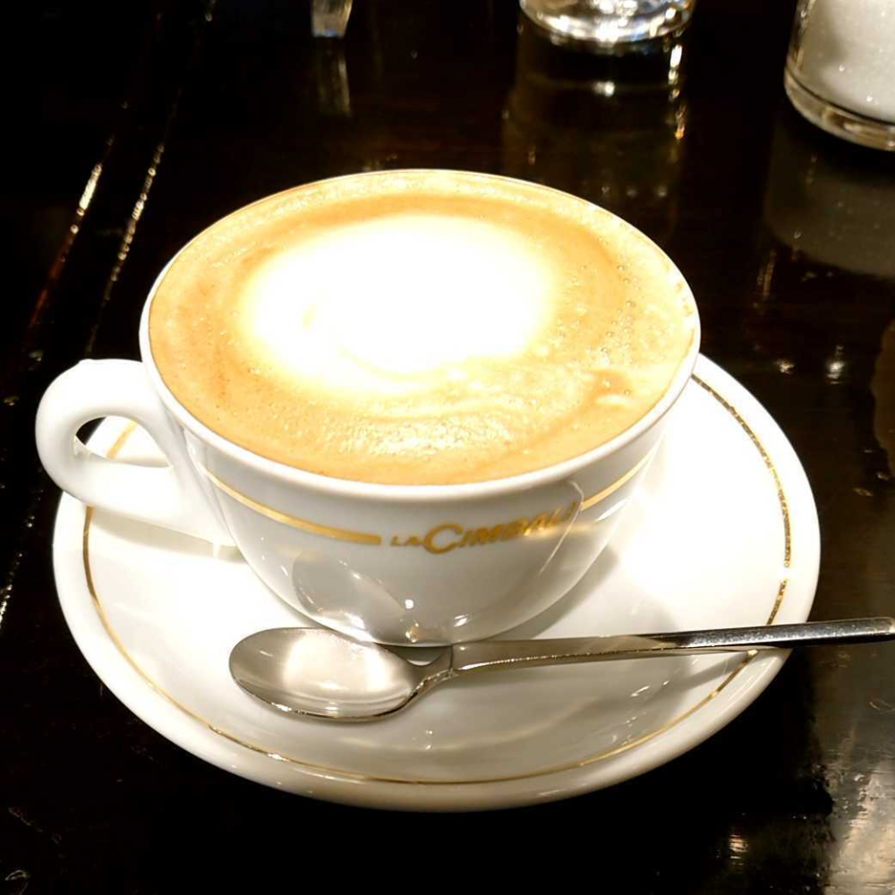
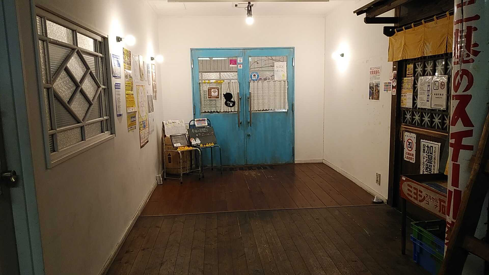

ROB PHOTONS

料金：¥700～1000
盛岡市中央通１丁目９−１１ CUBE映画館通りビル B1
ROB PHOTONSはバブルワッフルが特徴的なベトナム料理店です。
レベルの高いベトナム料理に海外で流行しているバブルワッフルを提供しています。
とても多いメニューにはまぜそばやカレーといったベトナム料理以外もあり、ほとんどテイクアウト
可能となっています。
⇐ view more
⇐ view more
ふくろうカフェRicky

料金：￥0～￥2,999
盛岡市大通り３丁目１−２３ クリエイトビル地下
フクロウだけでなくウサギやワラビーなどの珍しい動物ともふれあうことができます。
警戒心の強い子や、どっしりと構えて写真を撮らせてくれる子など、フクロウたちの性格もさまざまで見ていて飽きない場所でした。
⇐ view more
⇐ view more
ティーハウス リーベ

料金：￥0～￥999
〒020-0023 岩手県盛岡市内丸５−３
「お城の前の喫茶店」というキャッチフレーズの、とても味のあるクラシックな雰囲気の喫茶店。
15時まで600円のドリンク付きの日替わりランチがあり、満足感と店内の雰囲気による安心感も味わえる。
⇐ view more
15時まで600円のドリンク付きの日替わりランチがあり、満足感と店内の雰囲気による安心感も味わえる。
⇐ view more
4.カプチーノ詩季

料金：￥0～￥999
岩手県盛岡市盛岡駅前通10-6
レトロな昭和の雰囲気に落ち着いた店内を楽しめます。モーニングとランチ、本格的なエスプレッソを楽しめるカフェ。
⇐ view more
⇐ view more
5.Pamplemousse

料金：￥800～￥2100
岩手県盛岡市大通２丁目７−２０ ウエダビル 2F
Pamplemousse(パンプルムゥス)は、あかしあミツバチ養蜂場が経営しているカフェである。
ウエダビル2階にあり、青い扉が目印で店内には沢山のアヒルの玩具が...！
パンケーキが人気で生クリームがたっぷり乗った10cmを超えるパンケーキも！？
⇐ view more
⇐ view more